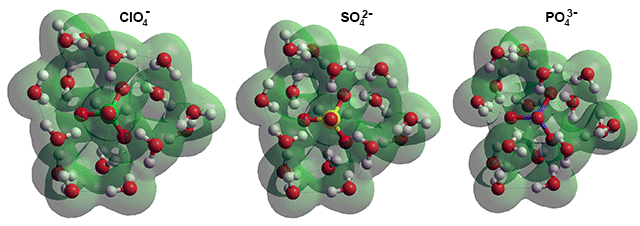

Cation+(H20)6
 What is meant by ion hydration
What is meant by ion hydration
 Methods for determining ion hydration
Methods for determining ion hydration
 Ion pairs
Ion pairs
 Water clustering around ions
Water clustering around ions
 Sulfate and other large anions
Sulfate and other large anions
A great deal of information exists concerning the hydration of ions. Much of this concerns the number of molecules of water that are bound to the ions and their distribution and coordination. Separately, the strength of binding and their residence times may be determined. A wide range of residence times has been found from < ns (Cs+ ) to 300 years (Ir3+). The ionic charge, radial distance of the inner hydration water, and width of the inner hydration layer determine these residence times; with the width of the inner hydration layer playing a particularly important part for otherwise similar ions [3040].
The two factors, coordination number and strength of binding, are not related. Large ions necessarily have large coordination numbers. There is no correlation between these “hydration” numbers and those reported for residence times [2654]. When the binding is labile, such as around K+ and Rb+ [2857], there is competition between the influences of the ion (close ion hydration) and the hydrogen bond interactions among the first-shell waters and between the first-shell waters and the bulk (potential clathrate formation). Unfortunately, the data is not clear-cut, with different methods determining different aspects of ionic hydration and producing different figures. Additionally the bound water reduces with increased temperature and concentration [2206] and may vary with the nature of the counterions and any other solutes present. Concentration is critical as salt may form water-separated ion pairs and direct ion pairs, particularly at higher concentrations where there is competition from solute and solvent for the remaining water molecules, with both reducing the total number of water molecules involved in inner-shell hydration. In concentrated solutions, all ions slow down the rotation of the water molecules, regardless of whether they weaken or strengthen the water hydrogen-bonding network at lower concentrations. This is mainly due to the coupling of the slow, collective component of water rotation with the motion of the sizable ion clusters that are found in the concentrated solutions, rather than water hydrogen bonds switching between the closely-spaced ions [3193]. Liquid LiCl.6H2O is a glass former at low temperatures. It has a very high concentration of salt and contains much ion pairing (see below). The salt modifies the oxygen radial distribution function and the angular distribution function of the hydrogen bonds in water in such a way as to indicate that the LiCl has the role of enhancing the high-density liquid component of water with respect to the low-density component [3419].
The effects of ions and counterions may not be additive between different salts. The thermodynamic hydration numbers, g derived from colligative data, correlate well with entropies of hydration, viscosity B coefficients, the Hofmeister series, experimental and theoretical sequential binding energies of gas-phase ion-water clusters, numbers of water molecules co-extracting into organic solutes, residence times of water molecules around ions, and the ordering of limiting conductivities of ions [2654].
The vibrational spectra of strong electrolyte solutions change with an increase in the molarity suggesting changes in the organization of water molecules independent of the ions’ nature but determined by the two-state nature of liquid water [3284].
The hydration of ions has a dampening effect on the water dynamics in concentrated ionic solutions. The cause of this has been subject to debate [3458] as to whether this is a localized effect on hydrogen-bond jumps or the coupling of the slow, collective component of water rotations with the motion of sizable ion clusters in the concentrated solutions. Maybe both effects are relevant.
The main methods chosen are IR [895], NMR [781], molecular dynamics, use of colligative properties and x-ray and neutron diffraction [1062]; other methods include X-ray spectroscopy [1125], ultra-acoustics [1288], Raman spectroscopy [1313], electro-osmosis [2366] and gel exclusion chromatography [1124]. Of these methods, only molecular dynamics and IR give dynamic information, whereas most methods give time-averaged data. Water molecules are most affected when they lie closest to the ions, and the structuring of the water away from the ions is little changed from its natural state. Water molecules around small cations are highly polarized due equally to the cation and the other cation-surrounding but not mutually hydrogen-bonded water molecules [1439]. This polarization causes strengthening in their donor hydrogen-bonding; for example, the hydrogen bond energies of Zn2+(H20)5HO-H···OH2, ZnCl+(H20)4HO-H···OH2, ZnCl2(H20)3HO-H···OH2 are 426%, 277%, and 23% respectively stronger than the HO-H···OH hydrogen bond [1906]. Water in the hydration shell is vibrationally decoupled from its neighbors [2255]. Moreover, the hydrogen-bond strength between these water molecules is ion-specific and varies as CO32 -> SO42− > bulk water ≈ Cl− > I− whereas the librational energy varies in the reverse direction CO32 - ≈ SO42− < bulk water < Cl− < I− [2255], thus showing that the more kosmotropic ions form strongly hydrogen-bonded clusters with more rigid conformation (i.e., low librational freedom). Although the available information mostly concerns the local clustering of water around the ions, the formation of much larger domain structures [407] with diameters ≈ 100 nm [1148] has also been found.
The ions in NaCl solutions
Often, concentrated solutions are used to examine salt hydration (e.g., [2170]) to reduce the 'bulk' water signal. Such solutions only lead to descriptions of the hydrated state in such concentrated solutions. They cannot be used to establish the hydration states in more commonly encountered dilute solutions. Sometimes the solution may be so concentrated that there is no 'bulk' water present, and all water molecules interact with one or more ions [1559]. As an example seen left, the number of water molecules associated with each ion in 5 M NaCl solutions is less than five per ion when the separation of the ions is less than one H2O molecular diameter. This problem is even worse in some modeling studies where ionic concentrations even greater than experimental solubility limits may be used, and empirical computational rules may be introduced to prevent oppositely charged ions 'crystallizing' out.
The dominant forces on ions and polar molecules in aqueous solution are short-range chemical interactions involving the spare outer electrons on the water molecules with cations, positively charged atoms, and hydrogen bonds donated from water molecules with anions [1190] and negatively charged atoms. Both processes involve effective partial charge transfer from the ion, or charged atom, to water.f The resulting interactions with water are quite different, with the anion-hydrogen bond interactions being enthalpically much greater than cation-lone pair electron interactions for the same size ions due to the closer approach of the atoms [1418]. Longer-range electric fields (> 3 nm), due to the ionic charges are weak relative to water-water hydrogen-bonding [1190]. The solvation energy of monovalent cations and anions are well modeled by a continuum model that includes electrostatic, dispersion, and cavity contributions showing that the water molecules outside these influences have little net practical difference from bulk water [2010].
The presence of ions causes localized water clusters to be stabilized over their state in the bulk of the solution as they reduce the hydrogen-bonding exchanges and proton mobility [1919] of the affected water molecules. Their solutions are, therefore, not homogeneous on the nanoscale, although so on larger scales. Using statistical mechanics, it has been shown that the effect on the clustering extends out to 3-4 hydration shells (≈ (H20)130) in the case of weakly hydrated ions and 7-9 shells (≈ (H20)400) in the case of strongly hydrated cations, but retaining good hydrogen-bonding [1915]. This theoretical result is in agreement with the experimental ensemble infrared photodissociation (IRPD) spectra in the hydrogen stretch region (∼2800-3800 cm−1) for aqueous nanodrops containing approximately 250 water molecules ( equivalent to those in an ES or CS structure) and SO42−, I−, Na+, Ca2+, or La3+ [1917]. Multiscale investigations have shown that ions induce long-range orientational order of the hydrogen bond network starting at 10 µM concentrations, ~ (H20)2,750,000, for changes in the surface tension with a factor difference between H2O and D2O of 6-fold [2550]. These long-range effects may be due to fluctuating water wires between oppositely charged ions.
Much of the inner clustering may be understood in terms of the puckered dodecahedra (see below right, also described elsewhere). [Back to Top  ]
]
Ions can interact with each other in aqueous solutions, so forming ion-pairs (see also elsewhere). These may be contact ion-pairs (CIP), solvent-shared ion-pairs (SIP), or solvent-separated ion-pairs (2SIP). An anion-cation pair may form all of these to varying extents together with well-separated ions dependent on the concentration and temperature. The relationship between the reaction coordinates, the ion-pair distance, the kinetics, and the coordination numbers have been examined for shifts between the CIP and SIP/2SIP states [3009]. Surprisingly, the degree of association does not follow the expected equilibria and is relatively independent of concentration [2654]. These different types may be quantified using dielectric spectroscopy [2631]. The effective ion-pair concentration may also be determined by freezing point depression [2864].
Different ion-pairing
There is insufficient water in more concentrated solutions to allow well-separated ions, and all ions will form pairs. The tendency to form inner-sphere ion-pairs is reflected in the salt's solubility; the solubility of CaF2, AgI, CaI2, and AgF being 0.016, 0.0000016, 2090, and 1820 g/kg water, respectively [63] with ion-pairing AgI ≫ CaF2 ≫ AgF ≥ CaI2. Some ions retain their hydration shell so strongly that at all concentrations, they form solvent separated ion pairs. MgSO4 is an example that does not form contact ion pairs at any concentration, 0.1 mol ˣ dm−3 to 2.4 mol ˣ dm−3 [3505]. The energy barrier between solvent separated ion pair and contact ion pair depends on the balance between electrostatic potential energy and entropy [1917].
The ion pair equilibrium is given by [3505]
M(H2O)a+ + X(H2O)b−  +M ƖƖ X−(H2O)c +(H2O)d
+M ƖƖ X−(H2O)c +(H2O)d
where the number of water molecules in the released water cluster is d = a + b - c.
The equilibrium constant Keq is given by
Keq = ([+M ƖƖ X−(H2O)c] ˣ [(H2O)d])/([M(H2O)a+ ] ˣ [ X(H2O)b−])
Zavitsas makes a case that this equilibrium constant is independent of concentration [3505], at least up to very high concentrations where there is insufficient water to bind strongly. For NaCl solutions, he finds that the percentage dissociated is 77%, with 23% existing as the ion pair. [Back to Top  ]
]
Dodecahedral cavity puckering caused by ion hydration

Infrared photodissociation spectroscopy (IRPD) and blackbody infrared radiative dissociation (BIRD) support the importance of (H2O)20 water clathrates (a) surrounding monovalent cations [2017]. H3O+ and NH4+ may use a tetrahedral cavity (c) in a puckered water dodecahedra to form magic number cluster ions. The octahedral cavity (d) could be occupied by any of the many monatomic cations and anions that are usually found in contact with six water molecules in their (inner) hydration shell (for example, Na+, K+ a, Cs+ a, Ca2+, Cl−, Br−), while allowing a fully hydrogen-bonded second shell that includes 6 further water molecules held directly to the six inner water molecules, in agreement with the hydration number of Ca2+ = 12.3 and close to the complete second shell of 12 as described by [4090] (see below left, but with a rather flattened structure). Such a structure for Na+(H2O)20 has been obtained using the AM1 semi-empirical model [323].
Possible Ca2+ hydration puckering
from [4090]
Similarly, the cubic cavity (b) could be occupied by triply charged lanthanoid or actinoid ions that have a coordination number of eight (see also the connectivity maps below), such as Lu3+ that has been found by X-ray crystallography to have 8 water molecules in its inner-shell and 11.9 water molecules in its second shell [2343]. Such clathrate hydration around K+ and Cl− in dilute KCl solutions agrees with the ≈ 45 molecules of water found by X-ray phase analysis [1161]. In agreement with this idea, terahertz (THz) spectroscopy of solvated alkali halide salts at around 85 cm−1 (2.5 THz) shows the ions rattle around within the water network [1649]. Assuming icosahedral clustering, water molecules around ions show that only the inner two cluster layers (≈ 40 molecules) are strongly affected, with the effect of different amounts of puckering (caused by higher charge density and smaller ions) disappearing by about 0.68 nm and a cavity size of 0.45 nm having no effect on the water coordinates. This is in close agreement with such length scales discovered by quasichemical theory [2008].
In the case of chloride, the O-H···Cl− distance (0.37 nm) is only slightly less than the average clathrate size (0.39 nm), with the bond strength about one kJ ˣ mol−1 weaker. This allows water's easy large-angle orientational jumps [1366], consistent with reversible puckering. Therefore, there are flickering exchanges between a continuum of structures based around the two minimum energy basins concerning the closest water molecules. Nuclear quantum effects have been shown to weaken the hydrogen bonding between the dissolved Cl− ion and its aqueous solvation shell [4082]. This results in the Cl− ions' disruptive effect on water's hydrogen-bond network being reduced. Many ‘solvent separated anion pairs have been detected at high LiCl concentrations [4106].
The hydration of the ammonium ion (NH4+) has been investigated using ab initio molecular dynamics simulations and quantum Monte Carlo calculations [4084]. Its hydration structure possesses bifurcated hydrogen bonds, facilitating its easy rotation and weakening of any established hydrogen bonding to its aqueous shell, indicating a flexible hydration
structure with a large coordination number.
Shown opposite are the connectivity maps of the dodecahedra showing the collapsed positions (red or blue circles) for 2 (a), 4 (b), 6 (c), and 8 (d) molecules. Alternative structures may be formed from all of these connectivity maps by rotation and reflection. In these cases, the dodecahedral cluster, comprising the inner hydration shell and its hydrogen-bonded linking water (often termed the 'second' hydration shell), would contain hydrogen-bonding defects where water molecules associate through hydrogen-bonding or lone pair electrostatics to the central ions, reducing the water- water hydrogen-bonding. Given that the total hydration in the first and second shells is the same, smooth transitions between different coordination preferences may result in the intermediate 'mean' primary hydration noted with several ions.a
Different ions may hold their water molecules more tightly (≈ 10−5 s−1 H2O exchange for some lanthanides) or more loosely (≈ 109 s−1 H2O exchange for some alkali metals), even with the same inner hydration level, giving varying degrees of dynamic puckering. Na+ will give greater puckering than K+ [3766]. Hence, they would cause different degrees of hydrogen bonding in their surroundings, as shown by the various properties of kosmotropic and chaotropic ions. This has been proven by the free -O-H stretch of surface water molecules in ion-containing ES-sized nanodrops (≈ (H2O)250) of water, where Ca2+ and SO42− show distinct differences from Na+and I− [1967].
There is an opposing balance between the ion-water interactions and first shell second shell water interactions in all these puckered clusters. When the water-water interactions are weakened by a raised temperature, for example, then the ions will hold the water molecules more tightly, and the ion-water distance contracts [1126]. Where the water molecules are only weakly held to the central ion, the water molecules expand away from the central ion with temperature [1126]. If the water molecules within puckered clusters are held less strongly, they have short residence times and wide first hydration layers [3040].
A further possibility with dodecahedral clustering is that the two opposite positions from the water dodecahedra may come together and be replaced by a single ion (see (e) in the connectivity map (Schlegel diagram) above ); giving that ion an inner-shell of six water molecules and the second shell of 12 water molecules. Such an arrangement has been found around Mg2+ ions [253, 378].
Connectivity maps
Ti3+(H2O)18 cluster
Li+(H2O)4(H2O)9(H2O)5
Sc3+(H2O)8(H2O)8
e-(H2O)16
The Mg2+(H2O)6(H2O)12 [3057], Al3+(H2O)6(H2O)12, Zn2+(H2O)6(H2O)12 and Be2+(H2O)6(H2O)12, clusters with two hydrogen bonds leading from each of the six inner coordination sphere (shown as red circles) gave the connectivity opposite top [378] as minimum energy structures. Together with the Li+(H2O)4(H2O)9(H2O)5 and Na+(H2O)4(H2O)9(H2O)5 clusters, similarly calculated [378] and shown opposite middle and Sc3+(H2O)8(H2O)8 clusters [2872] shown opposite at the bottom. These clusters can be seen to show many similarities to structure (d) above. The dipoles of the inner water molecules are oriented towards the ion preventing the formation of a complete dodecahedral water cluster. hydrogen bonding between the second sphere water molecules was shown to be particularly important. An identical arrangement (to that shown opposite at the top) has been found in the Ti3+(H2O)6(H2O)12 cluster and used for other hydrated transition metal clusters [332].
Small-angle x-ray scattering (SAXS) experiments show that while Na+ weakens hydrogen bonds in water, Mg2+ and Al3+ strengthen them by forming stable, highly ordered, high-density clusters [2320]. This indicates that clathrates formed by singly charged ions, such as K+, spend more time in expanded or partially expanded lower-density states. In contrast, clathrates around doubly and triply charged cations, such as Mg2+ and Al3+, are mostly fixed in the collapsed high-density structures with water molecules occupying smaller volumes.
An interesting possibility that fits with an ionic model [314] is that the experimentally determined second hydration shell water may consist of all the water molecules that are doubly-hydrogen-bonded directly to any two of the primary hydration water molecules in the puckered dodecahedral model (above). This would result in tetrahedrally (4), octahedrally (6) and cubic (8) coordinated primary hydration water molecules having 0, 6, and 12 secondary hydration water molecules, respectively. Examples (from [314]) of this primary and secondary hydration are Li+ (tetrahedral, 4.68 primary, 0 secondary), Ca2+ (octahedral, 6.10 primary, 5.29 secondary), and Ho3+ (as a typical lanthanide, cubic, 8.00 primary, 10.67 secondary). The Li+ ion has somewhat strange behavior out of series with the other alkali metal ions, which may be due to it holding on particularly strongly to one of its inner-sphere water molecules [1214, 4262], or it forming short alternating linear clusters with the anions [1324].
A highly stable solvated electron has been identified inside a tetrahedrally collapsed dodecahedral (H2O)20 structure, e−(H2O)20 (cluster c, as above, with four inwardly pointing H-atoms) [734]. Others have found the preferred hydrated electron structure is e−(H2O)16 [695, 3384], with four water molecules in the inner-shell only linking through a weak network to the rest of the cluster (where the electron is shown as blue circles and the inner-shell water as red circles).d Further development of this model indicates that treatment of its thermal fluctuations is required to understand the hydrated electron’s chemical and physical behavior [4119]. An ab initio investigation of the resonance Raman spectrum of the hydrated electron has supported the cavity model of e(aq)− over non-cavity models [3725].
CsI(H2O)18 clathrate
Hydroxide ion hydration may also involve such (H2O)20 clusters as it is found that liquid water in its solutions undergoes a significant change in structuring when the concentration of OH− rises above the ratio of one OH− to 20 H2O [1229].
Large ions can ion-pair and still create clathrate water shells. The cation occupies the central cavity and the anion hydrogen-bonded to four water molecules by replacing some of the water molecules; as shown with CsI(H2O)18 shown left [2158]. The preferred structure of LiI(H2O)18 is quite different, forming water-separated ion-pairs [2158] due to the strength of Li-H2O interactions.
Weakly attached ion clathrate systems can also be considered as the ion inside a complete water clathrate, like Cs+(H2O)20, the expanded cluster. The O-H stretching vibrational spectrum of such clusters has been examined, where the structure has two classes of network sites (AAD and ADD) that differ by the number of H-bond acceptors (A) and donors (D) associated with the water molecules at each location [3578]. Of these arrangements the ADD arrangement prefers to attach closer to the central Cs+ ion as Cs+····O-H arrangements,
[Back to Top  ]
]
A cluster of 16 water molecules around a sulfate ion
Ions such as sulfate [156]e and ZnBr42− [178] form a hydration shell from small rings of hydrogen-bonded water. Such a shell may consist of a symmetrical dodecahedral arrangement of 16 water molecules where each sulfate oxygen (or ZnBr42− bromine) is hydrogen-bonded to three water molecules; these water molecules are forming small looped chains of 2 (6 occurrences per SO42−(H2O)16) or 3 (12 occurrences per SO42−(H2O)16) molecules from one sulfate oxygen to another. Bisulfate (HSO4−), the principal ion in dilute sulfuric acid (≈ 0.1 M), may also be hydrated similarly as HSO4−(H2O)16. However, It should be noted that sulfuric acid has many hydration shells and is not entirely hydrated, as judged by the heat of mixing until over 500,000 molecules of water are added to each molecule of H2SO4 [947]. Although this clustering is not indicated from gas-phase kinetic studies [646], support comes from photoemission spectroscopy where there is an noticeable change in properties beyond n=16 for SO42−(H2O)n clusters [298] and from FTIR [1072]. The mean SO42− hydration determined from Raman spectroscopy is only 12 at 0.1 M and is shown to be much stronger than that for ClO4− [3676]. This lower value shows the incomplete nature of the hydration.
Interactive Jmol structures are given.
Similar clustering may occur around PO43- where the surrounding (H2O)n cluster has n=15±3 as shown by neutron scattering [544] and n≈16, with consistent geometric parameters, by molecular dynamics simulation [668].b
Anions with (H2O)16 calculated using the Restricted Hartree-Fock wave function (RHF) using the 6-31G** basis set

The increasing charge between ClO4−(H2O)16 (charge on each ClO4− O-atom ~ = -0.72), SO42−(H2O)16 (charge on each SO42− O-atom ~ = -0.85) and PO43−(H2O)16 (charge on each PO43− O-atom ~ = -1.00) causes the attached hydrogen bonds to increase their strength and reduce their length.
A cluster of twelve water molecules
around a triphosphate ion
The structural forms of ClO4−(H2O)16 and SO42−(H2O)16 are identical, but this breaks down with PO43−(H2O)16 tending towards PO43−(H2O)12 (with each PO43− O-atom hydrogen bonded to three H2O molecules forming inner rings, see right) where the attraction of the H2O molecules to the PO43− O-atoms is very strong.
PO43−(H2O)16 PO43−(H2O)12 + 4H2O
PO43−(H2O)12 + 4H2O
The weak linkages in ClO4−(H2O)16 allow the free clathrate ClO4−(H2O)20 to form as well.
ClO4−(H2O)16 + 4H2O  ClO4−(H2O)20
ClO4−(H2O)20
Such a cluster can form the central part of an icosahedral water cluster (SO42−(H2O)276) possessing just four defects. c One of the puzzles associated with this ability to interact with a water dodecahedron is the very different aqueous properties of sulfate (SO42−) and perchlorate (ClO4−) ions. These ions are at opposite ends of the Hofmeister series but have similar geometry; tetrahedral with perchlorate Cl–O bond lengths only a few hundredths of an Å shorter than sulfate S–O bond lengths. The explanation comes from understanding that the perchlorate hydrogen bonds being much weaker than those of sulfate. The perchlorate-water interactions are far lower than water-water interactions [3430]. The experimental partial molar volume of perchlorate at infinite dilution [233] has been found to be twice that of sulfate, in agreement with perchlorate ions being found in expanded clathrate-like water dodecahedra. In contrast, sulfate is found in collapsed puckered water dodecahedra. The difference is due to the inability of the perchlorate oxygen atoms to form sufficiently strong hydrogen bonds. It can, therefore, sit within a complete dodecahedral water clathrate shell due to its approximately four-fold more diffuse surface charge (which scales with the absolute charge squared [529]). This explanation is borne out by perchlorate's lack of perturbation of the O-H vibrational spectra and lower water cluster sorption [306]. In support, an FTIR-ATR study showed ClO4− ions to be more disruptive of water's hydrogen-bonding than SO42− ions [862]; see also their relative kosmotropic/chaotropic effects.
Small-angle x-ray scattering (SAXS) experiments of polyatomic anions show that while perchlorate (ClO4−) causes little change to the structure of water, sulfate (SO42−), and phosphate (PO43- ) form stable, highly ordered, high-density clusters [2319]. This indicates that clathrates formed by singly charged ions, such as ClO4−, spend more time in expanded or partially expanded states, whereas clathrates around doubly and triply charged anions, such as SO42− and PO43- ), are primarily fixed in the collapsed structures. This view of ClO4− hydration is confirmed by the finding that it is somewhat hydrophobic with water sliding around the perchlorate anion by the formation and rapid switching of single, bifurcated, and trifurcated hydrogen bridges [3026]. This hypothesis is supported by the diffusion rates of the different ions [3618], where those polyatomic ions that tightly hold on to water (e.g., IO3−, HCO3−, CH3CO2−; that are more in line with the Stokes-Einstein value of diffusion) have much lower diffusivities (~40%) than those polyatomic ions that weakly hold on to water (e.g., ClO4−, ClO3−, NO3−, NO2−) [3618]. The same relationship holds for monatomic ions where weakly hydrated ions (e.g., Cs+, Rb+, K+, Cl−, Br−, I−) have higher diffusivities than more strongly hydrated ions (e.g., F−, Na+, Li+)
The anomalously high solubility of CO2 compared to CO [166] may also be explained by its presence as part of such hydrogen-bonded clusters.
Structures of nitrate and nitrite ions, 6-31G**
Nitrate and nitrite ions are planar symmetric ions with similar bond lengths and oxygen charges (see right). Surprisingly, solutions of the smaller ion (nitrite) have a greater viscosity than solutions of the larger ion (nitrate) [3275]. This was explained by the nitrite ion forming more and stronger hydrogen bonds with water per oxygen atom than the nitrate ion. It is clear by modeling the ions within hydration shells based on the dodecahedral (H2O)20 clusters ( as sulfate above) that nitrite fits better (as NO2−(H2O)18) into these clusters than nitrate (as NO3−(H2O)17). This fit causes a greater amount of the higher-viscosity low-density water to be formed. It should be noted, however, that the nitrite ions exhibit close to ideal behavior even at very high dilution, indicating that the H2O:NO2− interaction is very close to the H2O:H2O interaction; for example, NaNO2 solutions up to 12 molal (827.9 g ˣ kg−1water), CsNO2 solutions up to 35 molal (6821.9 g ˣ kg−1water) and RbNO2 solutions up to 62 molal (8151.1 g ˣ kg−1water) [4100].
Oxomettallate anions (e.g., ReO4−, CrO42−, MnO4−, MoO42−, WO42−, VO43−) in aqueous solution are similarly hydrated by accepting hydrogen bonds from the hydrating water molecules. Two hydrogen bonds are accepted where the central metal ion is from the heavier metals (Periods 5, 6, or 7), and three hydrogen bonds are accepted where the central metal ion is one of the lighter metals (Period 4, like above) [4066].
[Back to Top  ]
]
a Some workers report that K+ and Cs+ may have a coordination number of between 6 - 8. With a coordination shell of eight, K+ could sit in a cubic hole similar to that used by the K+ selectivity filter in K+ channels, where coordination shifts between six and eight to allow transport [267]. Chaotropic ions, such as these, bind water less strongly than water-water interactions. Therefore, it is unsurprising that water molecules readily detach from these ions. However, the same molecules usually return within less than a picosecond [586]. Such behavior is consistent with these ions residing within a rapidly fluctuating and puckering dodecahedral cluster. [Back]
b When the anion charge is reduced through HPO42− and H2PO4− the hydration shell increases to 20 H2O [668], in line with clathrate formation. [Back]
c Cluster defects are water molecules (labeled b-type previously) within the icosahedral cluster structure, with only three rather than four hydrogen bonds as the fourth site cannot accept/donate a hydrogen bond from/to either (a) a water molecule already possessing four hydrogen bonds; that is, the fourth site has the arrangement
![Cluster defect], water bound to anion](images/hofmei2.gif "Cluster defect], water bound to anion")

rather than
or (b) a bound atom that already possesses three hydrogen bonds such as the oxygen atoms in SO42−. [Back]
d The structuring around the excess electron has no consensus. The cavity model for solvated electrons is currently disputed by a study that gives increased H2O - H2O attraction when within the excess electron's influence [1704]. Any such additional attraction would cause stronger H2O clustering. However, another study describes the excess electron residing in a cavity [1841]. A further study localizes the excess electron in a cavity with an average radius of 1.8 Å and a majority coordination of five water molecules [3381]. [Back]
e It has been reported that sulfuric acid (H2SO4) in concentrated aqueous solution acts as though it is a tribasic H4SO5 acid [1936]. [Back]
f Transfer of electrons through the hydrogen bonds between anions (e.g., Cl−) and H2O may not be equal between the neighboring H2O molecules, leading to unequal but flickering changes in the bond lengths. [Back]
g Andreas Zavitsas proposes to call the dynamic average number of strongly bound water to ions (thermodynamic hydration number), the 'hydrodesmic number (Hd)'; from the Greek ὑδρο- for water and desmic from δεζμος, meaning strong bond [2654]. The Hd of an ion may vary with the form of the counterion [3505]. [Back]
Home | Site Index | Kosmotropes and chaotropes | Hofmeister series | LSBU | Top
This page was established in 2006 and last updated by Martin Chaplin on 11 November, 2021